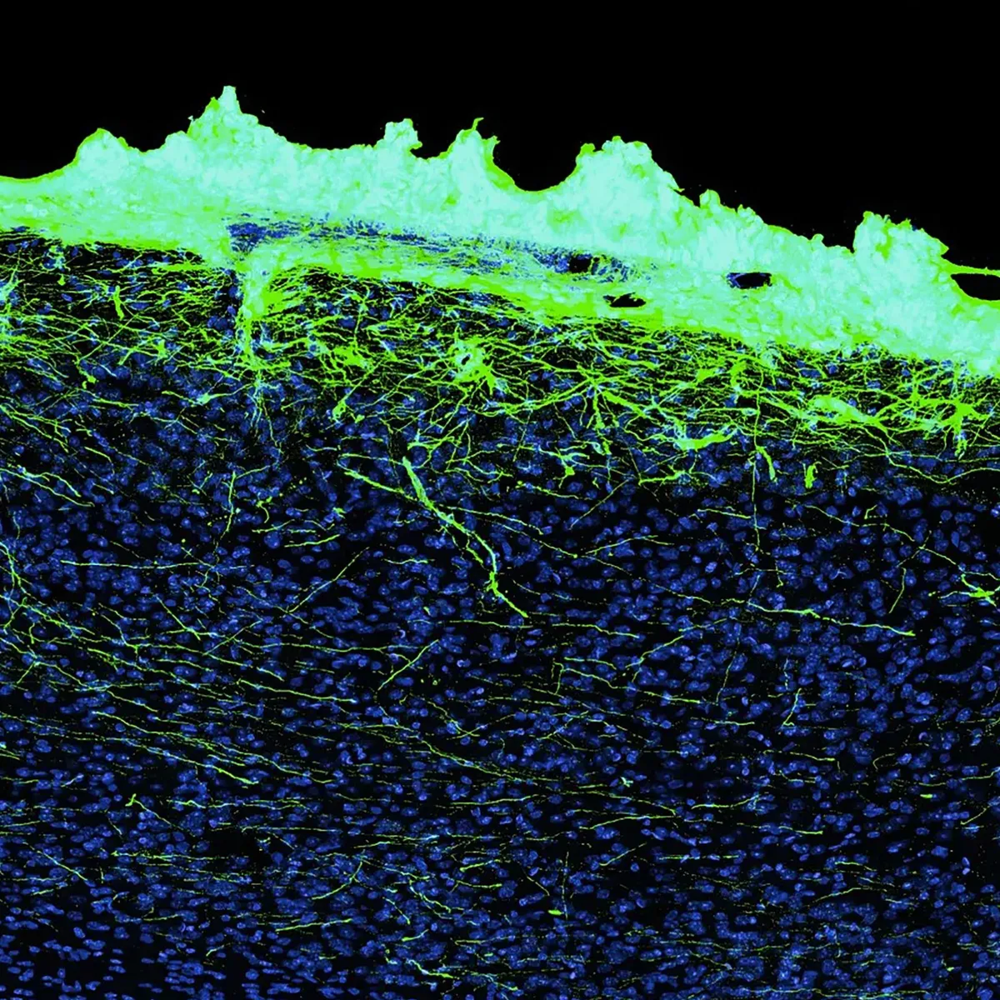
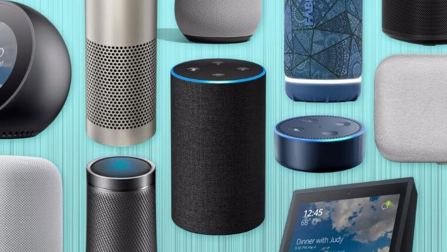
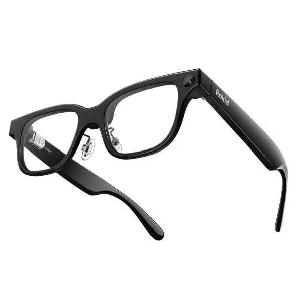
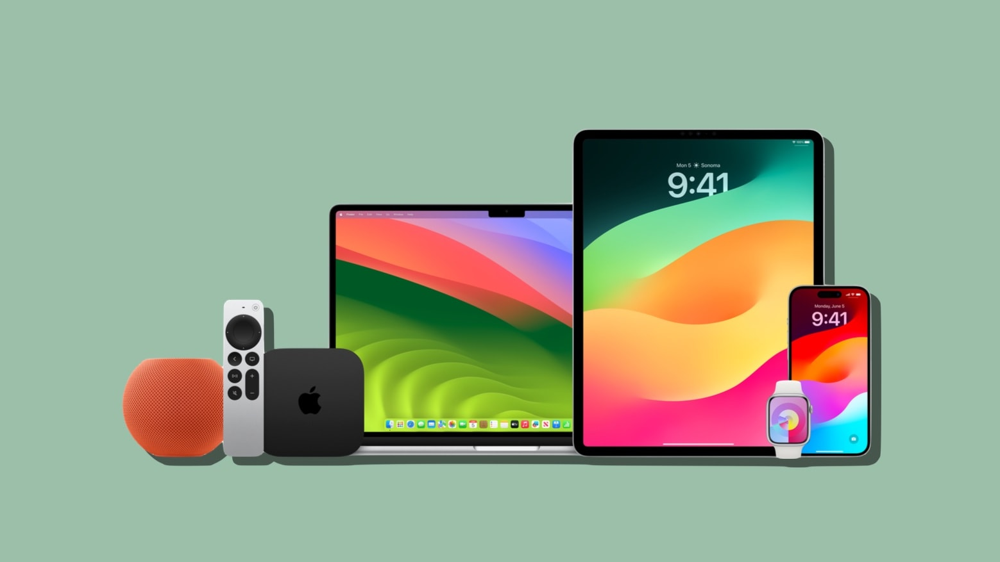

Incoming Protein Engineering Intern on the biohybrid BCI team. I will work on automating and improving the throughput of rhodopsin discovery assays for next-generation neural interface systems.


Incoming SDE Intern on the Devices team. I will work on bridging Alexa capabilities with Fire TV to create more seamless voice-driven entertainment experiences.

Built a calorie detection app by integrating smart glasses image capture, cloud-based calorie estimation, and frontend UI. Tested computer vision models including YOLOv8, SAM, and Depth Anything, and worked with vendors on camera requirements, cost, and hardware constraints.

Helped build AI-scientist systems to automate life science research, including bacterial transformation, Nanopore sequencing, colony picking, and custom lab automation tools.
Lab Auto Wiki

Built Prophet-based forecasting for 15-week Mac sales, improved MAPE by 56%, and incorporated the final model into the data team's prediction workflow.